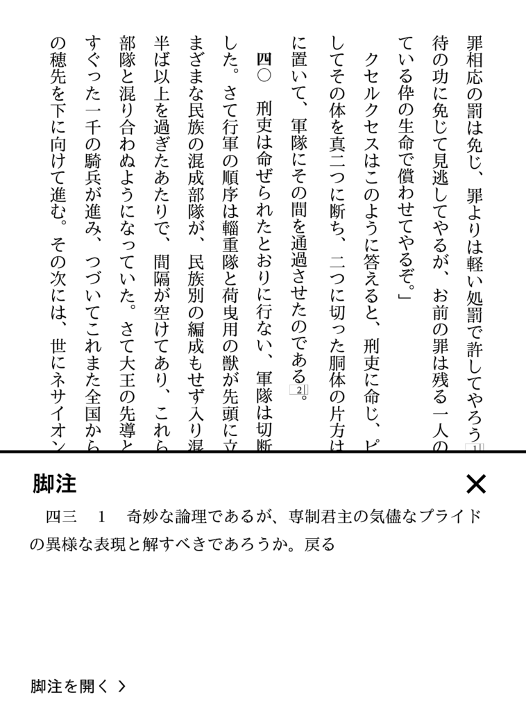

『ヘロドトス 歴史 下』
公開日：
岩波文庫の上中下三巻をやっとこさ読み終えた……
")
- 作者: ヘロドトス,松平千秋
- 出版社/メーカー: 岩波書店
- 発売日: 1972/02/16
- メディア: 文庫
- 購入: 2人 クリック: 10回
- この商品を含むブログ (13件) を見る
……んだけど、上中巻に比べるとあまりピンとくるエピソードがなくて、なかなか読み進まなかった。
下巻の俺的ハイライトは、ペルシアの大軍が行く先々の川の水を飲み干しちゃうところ。あと、諸国の軍を列挙する描写がなんとなく熱い。ペルシア帝国万歳(/・ω・)/
――とまぁ、そんなわけで、ギリシャの話よりもエジプトやペルシアの話の方がなんとなく自分の興味に合うみたい。すまんな、ヘロドトス。ポリス同士の政治関係（プラタイアとテーバイは、大阪と堺みたいに仲が悪いとか）がもっとよくわかればすんなり読めるのにな。
強いて言えば、ハルカリナッソスのアルテミシアはちょっと魅力的な人物かもしれない。
「サラミス海戦！アルテミシアちゃん大勝利！」①#マンガ #漫画 #歴史漫画 #ペルシア #ギリシア #クセルクセス #サラミス海戦#アルテミシア #ペルシア戦争 #コス島 pic.twitter.com/Eo4bxJE9RR
— マミー＠マイナー世界史 (@88888888mamy) 2017年6月7日
「サラミス海戦！アルテミシアちゃん大勝利！」②おしまい#マンガ #漫画 #歴史漫画 #ペルシア #ギリシア #クセルクセス #サラミス海戦#アルテミシア #ペルシア戦争 #コス島 pic.twitter.com/3aJWjBEgYz
— マミー＠マイナー世界史 (@88888888mamy) 2017年6月7日
クセルクセスの
「わが軍の男はみな女となり、 女が男になったのじゃな。」
みたいなセリフも味があっていい。
とりあえず、もうちょいギリシアのことがわかったら、また再挑戦するわ。
それにしても、終わり方が微妙というか、「ぇ、そんなクッソ後味の悪い話で終わりなの？」みたいな。自分はてっきり「ペルシア倒したぜ！ ギリシャ万歳(/・ω・)/」って感じの終わり方をするんだと思ってたからちょっと拍子抜け。哲学では西洋に分があるけど、歴史に対する態度は東洋（というか中国）の方が勝ってる気がする。そう決めつけるのは、トゥキディデスを読んでからでも遅くないかなって気もしないでもないけどね。
脚注
最初は Android の Kindle アプリで読んでいたんだが、脚注が巻末へのリンクになっていて、行ったり戻ったり面倒くさかった。でも、電子書籍リーダーだと、

画面下にピョコって出る仕組みになっていて、とてもよかった。アプリ版もこうしてくれていればいいのに。
地図

- 作者: 古曳正夫
- 出版社/メーカー: 東海大学出版会
- 発売日: 2009/10/01
- メディア: 単行本
- クリック: 7回
- この商品を含むブログを見る
読書の助けのために地図も買った。ハードカバーなんだけど、中身はほぼ目次で、ディスクの中身が本体というのがちょっと面白い。全部物故抜いて、OneDrive にコピーして持ち歩いている。本とディスクにはもう用がないので、古本屋で売っちゃってもいいんだが、著者に還元されないのもなんなので（重版されない限り還元はないだろうが）、とりあえず手元に置いてある。
PDF だと読むの面倒くさいので、デカい紙に印刷して読みたい感じ。